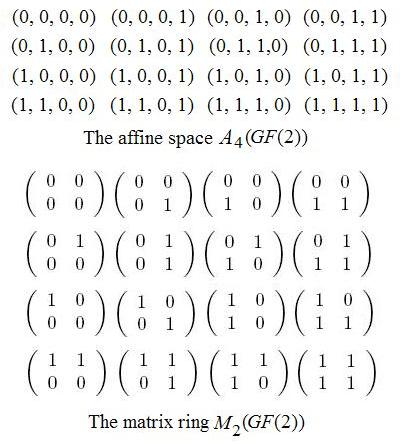

The Geometry of Qubits
by Steven H. Cullinane
August, 2007
In the context of quantum
information theory, the following structure seems to be of
interest--
"... the full two-by-two matrix ring with entries in GF(2), M2(GF(2))-- the unique simple non-commutative ring of order 16 featuring six units (invertible elements) and ten zero-divisors."
-- "Geometry of Two-Qubits," by Metod Saniga (pdf, 17 pp.), Jan. 25, 2007
This ring is another way of looking at the 16 elements of the affine 4-space A4(GF(2)) over the 2-element field. (Arrange the four coordinates of each element-- 1's and 0's-- into a square instead of a straight line, and regard the resulting squares as matrices.) (For more on A4(GF(2)), see Finite Relativity and related notes at Finite Geometry of the Square and Cube.) Using the above ring, Saniga constructs a system of 35 objects (not unlike the 35 lines of the finite geometry PG(3,2)) that he calls a "projective line" over the ring. This system of 35 objects has a subconfiguration isomorphic to the (2,2) generalized quadrangle W2 (which occurs naturally as a subconfiguration of PG(3,2)-- see Inscapes.) The connection of this generalized quadrangle with PG(3,2) is noted in a later paper by Saniga and others ("The Veldkamp Space of Two-Qubits," cited below).
Saniga concludes "Geometry of Two-Qubits" as follows:
"... the full two-by-two matrix ring with entries in GF(2), M2(GF(2))-- the unique simple non-commutative ring of order 16 featuring six units (invertible elements) and ten zero-divisors."
-- "Geometry of Two-Qubits," by Metod Saniga (pdf, 17 pp.), Jan. 25, 2007

This ring is another way of looking at the 16 elements of the affine 4-space A4(GF(2)) over the 2-element field. (Arrange the four coordinates of each element-- 1's and 0's-- into a square instead of a straight line, and regard the resulting squares as matrices.) (For more on A4(GF(2)), see Finite Relativity and related notes at Finite Geometry of the Square and Cube.) Using the above ring, Saniga constructs a system of 35 objects (not unlike the 35 lines of the finite geometry PG(3,2)) that he calls a "projective line" over the ring. This system of 35 objects has a subconfiguration isomorphic to the (2,2) generalized quadrangle W2 (which occurs naturally as a subconfiguration of PG(3,2)-- see Inscapes.) The connection of this generalized quadrangle with PG(3,2) is noted in a later paper by Saniga and others ("The Veldkamp Space of Two-Qubits," cited below).
Saniga concludes "Geometry of Two-Qubits" as follows:
"We have demonstrated that the basic properties of a system of two interacting spin-1/2 particles are uniquely embodied in the (sub)geometry of a particular projective line, found to be equivalent to the generalized quadrangle of order two. As such systems are the simplest ones exhibiting phenomena like quantum entanglement and quantum non-locality and play, therefore, a crucial role in numerous applications like quantum cryptography, quantum coding, quantum cloning/teleportation and/or quantum computing to mention the most salient ones, our discovery thus
- not only offers a principally new geometrically-underlined insight into their intrinsic nature,
- but also gives their applications a wholly new perspective
- and opens up rather unexpected vistas for an algebraic geometrical modelling of their higher-dimensional counterparts."

is not without relevance to the physics of quantum
theory.
Other material related to the above Saniga paper:
Quantum Geometry, a list of recent work in this area by Metod Saniga
The Veldkamp Space of Two-Qubits, by Metod Saniga, Michel Planat, Petr Pracna, and Hans Havlicek, Symmetry, Integrability and Geometry: Methods and Applications (SIGMA 3 (2007), 075) (pdf, June 18, 2007, 7 pp.), and the following cited papers:
Other material related to the above Saniga paper:
Quantum Geometry, a list of recent work in this area by Metod Saniga
The Veldkamp Space of Two-Qubits, by Metod Saniga, Michel Planat, Petr Pracna, and Hans Havlicek, Symmetry, Integrability and Geometry: Methods and Applications (SIGMA 3 (2007), 075) (pdf, June 18, 2007, 7 pp.), and the following cited papers:
Pauli Operators of N-Qubit Hilbert Spaces and the Saniga–Planat Conjecture, by K. Thas, Chaos Solitons Fractals, to appear (as of June 18, 2007)
The Geometry of Generalized Pauli Operators of N-Qudit Hilbert Space, by K. Thas, Quantum Information and Computation, submitted (as of June 18, 2007)
Page created Aug. 12, 2007; last modified Aug. 15, 2007.